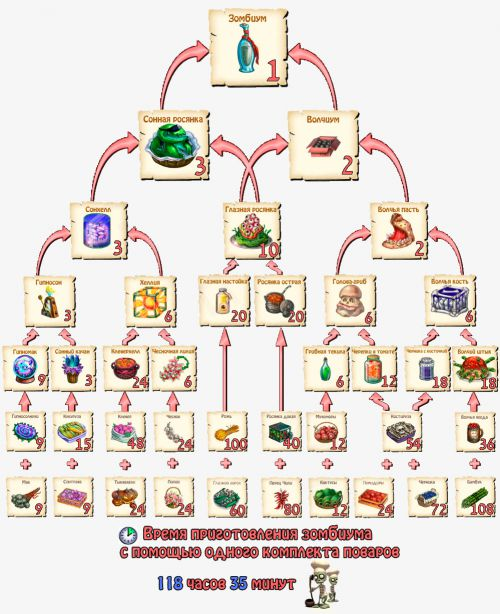

Главная / Экономика
Экономика
11 карточек из предыдущего исследования. Полнота и точность каждой карточки нуждаются в дополнительной сверке.
| —Факелы в секретных кладах | Механика | ВКонтакте; дата редакции неизвестна | предварительные сведения, требуется сверка |
| —Лимит подарков | Механика | ВКонтакте; дата редакции неизвестна | предварительные сведения, требуется сверка |
| —Зомбаксы и Вавилон | Механика | ВКонтакте; дата редакции неизвестна | предварительные сведения, требуется сверка |
| —Секретный клад | Механика | браузерные Зомби Ферма и Зомби Мания; платформу и редакцию уточнить | предварительные сведения, требуется сверка |
| —Экономика: мармелад | Механика | ВКонтакте; дата редакции источника не установлена | предварительные сведения, требуется сверка |
| —Пиратский сундук: исторические правила | Механика | ВКонтакте; дата редакции источника не установлена | предварительные сведения, требуется сверка |
| —Исторические способы получения зомбаксов | Механика | ВКонтакте; дата редакции источника не установлена | предварительные сведения, требуется сверка |
| —Путешествия и порталы — каталог ЗомбиСити | Исторический обзор | архив каталога 10.12.2019; дата редакции неизвестна | предварительные сведения, требуется сверка |
| —Клеверхелл и красная краска — расчёт 2012 года | Исторические советы | браузерная VK, исторические данные | предварительные сведения, требуется сверка |
| —Бизнес-центр — пример расчёта 2012 года | Исторические советы | браузерная VK, исторические данные | предварительные сведения, требуется сверка |
 Схема приготовления Зомбиума — иллюстрация 2012 года | Исторические советы | браузерная VK, исторические данные | предварительные сведения, требуется сверка |